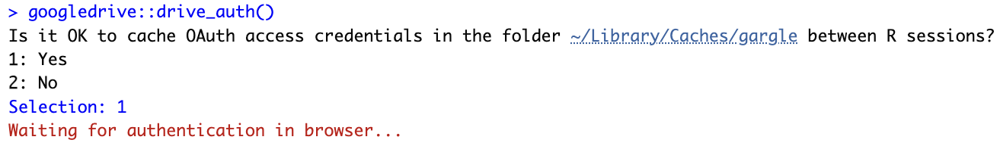

This page has code, images, and data visualizations that support the material presented in the workshop.
To reveal or hide the code, click on the button at the upper right.
Tip
Code hiding (folding) and showing is controlled by the code-fold and code-tools parameters in the YAML header for your document. See resources.qmd document to see how this is done.
Post-event survey
The NSF grant that supported the bootcamp engaged an external evaluator to survey participants. Here are the main findings:
Registrant data
We try to practice what we preach, so we include below the code we use to download the registration data and visualize it. Click on the code arrow to show or hide the code. The data file itself remains private. We have added csv/ to the .gitignore file so that the data remains available only to users who have it locally on their computers.
Note
Rick Gilmore has stored his Gmail account information in an environment variable called GMAIL_SURVEY.
To do something similar, use the usethis package to open your .Renviron variable.
install.packages("usethis") # if not installed already
usethis::edit_r_environ()
Add an entry like GMAIL_SURVEY="your.google.acct@gmail.com" to the file. Save it, and restart R.
Then, run the following line in your console:
install.packages("googledrive") # if not installed already
googledrive::drive_auth()
You will see something like this:

Select ‘1’ to initiate a Google authentication screen in your default browser. The browser should launch with a window asking your permission to authorize access to your Google account. Grant access to Tidyverse API Packages. Remember, you continue to control what code from the Tidyverse accesses specific Google sheets.
Once these steps are complete, the automated updating code below should work.
We download the data as a CSV (if params$update_data == TRUE).
if (update_figs) { registrations <- readr::read_csv("csv/data-mgmt-wksp.csv", show_col_types =FALSE)}
Then we clean the data by renaming the variables, dropping the “no’s”, wrangling the unit names, and adding a college variable.
Note
TO-DO: Remove duplicate entries. Drop timestamp beforehand since it will be unique even among duplicates in other fields.
Code
registrations_clean <- registrations |> dplyr::rename(timestamp ="Timestamp",email ='Email Address',attend ="Will you attend the workshop on Wednesday, March 27, 2024?",name ="What is your name?",unit ="What is your department or unit?",position ="What is your current position?",have_case_study ="Do you have a project or dataset that you would like to have considered for a hands-on case study?",case_study_details ="If yes, in a sentence or two, please describe your project or dataset.",comments ="Any comments?" ) |># Remove duplicate rows dplyr::distinct() |># Convert timestamp into proper dates dplyr::mutate(timestamp = lubridate::mdy_hms(timestamp,tz ="America/New_York")) |># Normalize unit names dplyr::mutate(unit = dplyr::recode( unit,`ESM-Ecosystem Science and Mgmt`="Ecosystem Science & Mgmt",`Earth and Environmental Systems Institute`="Earth & Environmental Systems Institute",`Earth and Environmental Systems Institute`="Earth & Environmental Systems Institute",`Civil and Environmental Engineering`="Civil & Environmental Engineering",`Civil and Environmental Eng`="Civil & Environmental Engineering",`FOOD SCIENCE`="Food Science",`Earth and Mineral Sciences, Energy Institute`="Energy Institute",`Center for Healthy Aging / HHD`="Center for Healthy Aging",`BMB`="Biochemistry, Microbiology, & Molecular Biology",`Biochemistry, Microbiology and Molecular Biology`="Biochemistry, Microbiology, & Molecular Biology",`Spanish, Italian and Portuguese`="Spanish, Italian, & Portuguese",`Spanish, Italian, and Portuguese`="Spanish, Italian, & Portuguese",`SIP`="Spanish, Italian, & Portuguese",`Department of Nutritional Sciences`="Nutritional Sciences",`Department of Medicine, Division of Endocrinology`="Medicine",`Nutrition`="Nutritional Sciences",`Department of Statistics`="Statistics",`RPTM`="Recreation, Park, & Tourism Management",`Kinesiology & Developmental Psychology`="Kinesiology",`Educational psychology`="Educational Psychology",`Clinical Psychology`="Psychology",`Communication Sciences and Disorders`="Communication Sciences & Disorders",`Center for Healthy Aging; Department of Psychology`="Center for Healthy Aging",`MCIBS`="Molecular, Cellular, & Integrative Biosciences",`Department of Chemical Engineering`="Chemical Engineering",`Biobehavioral health`="Biobehavioral Health",`EE`="Electrical Engineering",`Agricultural and biological engineering`="Agricultural & Biological Engineering" ) ) |># Drop no attends dplyr::filter(attend =="Yes") |># Add college dplyr::mutate(college = dplyr::case_match( unit,"Statistics"~"ECoS","Biology"~"ECoS","Biochemistry, Microbiology, & Molecular Biology"~"ECoS","Physics"~"ECoS","Chemistry"~"ECoS","Astronomy & Astrophysics"~"ECoS","Eberly"~"ECos","Eberly"~"ECos","Psychology"~"CLA","Spanish, Italian, & Portuguese"~"CLA","Research Informatics and Publishing"~"Libraries","Political Science"~"CLA","Applied Linguistics"~"CLA","Global Languages & Literatures"~"CLA","Sociology"~"CLA","English"~"CLA","C-SoDA"~"CLA","Office of Digital Pedagogies and Initiatives"~"CLA","Asian Studies"~"CLA","Anthropology"~"CLA","Linguistics"~"CLA","Center for Language Science"~"CLA","Foreign Languages"~"CLA","Languages and Literature"~"CLA","IST"~"IST","Chemical Engineering"~"Eng","Civil & Environmental Engineering"~"Eng","Material Science and Engineering"~"Eng","Engineering Science & Mechanics"~"Eng","Biomedical Engineering"~"Eng","Mechanical Engineering"~"Eng","Electrical Engineering"~"Eng","Chemical Engineering"~"Eng","Nutritional Sciences"~"HHD","HDFS"~"HHD","Communication Sciences & Disorders"~"HHD","Kinesiology"~"HHD","Recreation, Park, & Tourism Management"~"HHD","Prevention Center"~"HHD","Bellisario College of Communication"~"Comm","Marketing"~"Smeal","Food Science"~"Ag","Ecosystem Science & Mgmt"~"Ag","Entomology"~"Ag","Plant Pathology & Environmental Microbiology"~"Ag","Plant Science"~"Ag","Agricultural & Biological Engineering"~"Ag","Landscape Architecture"~"Arts & Arch","Neuroscience"~"Med","Medicine"~"Med","College of Human and Health Development"~"HHD","Center for Healthy Aging"~"HHD","Center for Childhood Obesity Research"~"HHD","Biobehavioral Health"~"HHD","Earth & Environmental Systems Institute"~"EMS","Geography"~"EMS","Energy Institute"~"EMS","Geosciences"~"EMS","Nursing"~"Nursing","Educational Psychology"~"Ed","Molecular, Cellular, & Integrative Biosciences"~"Huck","University Libraries"~"Libraries" ),.default ="Unknown",.missing ="Unknown" )registrations_clean <- registrations_clean |> dplyr::mutate(confirmed = dplyr::case_match( confirmation_response,"Sorry, can't make it"~"Decline","No response"~"No response","Yes, I'll be there"~"Confirm",NA~"No response","presenter"~"Confirm"),.default ="Unknown",.missing ="Unknown" )
The following is used to modify the above code to capture new unit names, clean/normalize them, and assign them to colleges.
Figure 1: Time series of registrations from 2014-02-13 to present
Source Code
---title: ""format: html: code-fold: true code-tools: true toc: trueparams: update_data: false---## AboutThis page has code, images, and data visualizations that support the material presented in the workshop.To reveal or hide the code, click on the button at the upper right.::: {.callout-tip}Code hiding (folding) and showing is controlled by the `code-fold` and `code-tools` parameters in the YAML header for your document.See [`resources.qmd` document](https://github.com/penn-state-open-science/data-mgmt-2024/blob/main/src/resources.qmd) to see how this is done.:::## Post-event surveyThe NSF [grant](https://www.nsf.gov/awardsearch/showAward?AWD_ID=1955049) that supported the bootcamp engaged an external evaluator to survey participants.Here are the main findings:## Registrant dataWe try to practice what we preach, so we include below the code we use to download the registration data and visualize it.Click on the `code` arrow to show or hide the code.The data file itself remains private.We have added `csv/` to the `.gitignore` file so that the data remains available only to users who have it locally on their computers.::: {.callout-note}Rick Gilmore has stored his Gmail account information in an environment variable called `GMAIL_SURVEY`.To do something similar, use the [`usethis` package](https://cran.r-project.org/package=usethis) to open your `.Renviron` variable.```install.packages("usethis") # if not installed alreadyusethis::edit_r_environ()```Add an entry like `GMAIL_SURVEY="your.google.acct@gmail.com"` to the file.Save it, and restart R.Then, run the following line in your console:```install.packages("googledrive") # if not installed alreadygoogledrive::drive_auth()```You will see something like this:Select '1' to initiate a Google authentication screen in your default browser.The browser should launch with a window asking your permission to authorize access to your Google account.Grant access to Tidyverse API Packages.Remember, *you* continue to control what code from the Tidyverse accesses specific Google sheets.Once these steps are complete, the *automated* updating code below should work.:::We download the data as a CSV (if `params$update_data == TRUE`).```{r set-up-update-data}library(ggplot2)if (!dir.exists('csv')) { message("Creating missing `csv/`.") dir.create("csv")}update_figs = TRUEif (params$update_data) { options(gargle_oauth_email = Sys.getenv("GMAIL_SURVEY")) googledrive::drive_auth() new_fn <- "csv/data-mgmt-wksp.csv" file.rename(new_fn, "csv/_data-mgmt-wkshp.csv") googledrive::drive_download( "Data Management Workshop Spring 2024: Registration (Responses)", path = new_fn, type = "csv", overwrite = TRUE ) message("Data updated.")} else { if (!file.exists("csv/data-mgmt-wksp.csv")) { warning("File not found: 'csv/data-mgmt-wksp.csv'") update_figs = FALSE } else { message("Using previously stored data.") }}```We load the saved CSV.```{r load-registration-data}if (update_figs) { registrations <- readr::read_csv("csv/data-mgmt-wksp.csv", show_col_types = FALSE)}```Then we clean the data by renaming the variables, dropping the "no's", wrangling the unit names, and adding a `college` variable.::: {.callout-note}**TO-DO:** Remove duplicate entries. Drop timestamp beforehand since it will be unique even among duplicates in other fields.:::```{r clean-registration-data, eval=update_figs}registrations_clean <- registrations |> dplyr::rename( timestamp = "Timestamp", email = 'Email Address', attend = "Will you attend the workshop on Wednesday, March 27, 2024?", name = "What is your name?", unit = "What is your department or unit?", position = "What is your current position?", have_case_study = "Do you have a project or dataset that you would like to have considered for a hands-on case study?", case_study_details = "If yes, in a sentence or two, please describe your project or dataset.", comments = "Any comments?" ) |> # Remove duplicate rows dplyr::distinct() |> # Convert timestamp into proper dates dplyr::mutate(timestamp = lubridate::mdy_hms(timestamp, tz = "America/New_York")) |> # Normalize unit names dplyr::mutate( unit = dplyr::recode( unit, `ESM-Ecosystem Science and Mgmt` = "Ecosystem Science & Mgmt", `Earth and Environmental Systems Institute` = "Earth & Environmental Systems Institute", `Earth and Environmental Systems Institute` = "Earth & Environmental Systems Institute", `Civil and Environmental Engineering` = "Civil & Environmental Engineering", `Civil and Environmental Eng` = "Civil & Environmental Engineering", `FOOD SCIENCE` = "Food Science", `Earth and Mineral Sciences, Energy Institute` = "Energy Institute", `Center for Healthy Aging / HHD` = "Center for Healthy Aging", `BMB` = "Biochemistry, Microbiology, & Molecular Biology", `Biochemistry, Microbiology and Molecular Biology` = "Biochemistry, Microbiology, & Molecular Biology", `Spanish, Italian and Portuguese` = "Spanish, Italian, & Portuguese", `Spanish, Italian, and Portuguese` = "Spanish, Italian, & Portuguese", `SIP` = "Spanish, Italian, & Portuguese", `Department of Nutritional Sciences` = "Nutritional Sciences", `Department of Medicine, Division of Endocrinology` = "Medicine", `Nutrition` = "Nutritional Sciences", `Department of Statistics` = "Statistics", `RPTM` = "Recreation, Park, & Tourism Management", `Kinesiology & Developmental Psychology` = "Kinesiology", `Educational psychology` = "Educational Psychology", `Clinical Psychology` = "Psychology", `Communication Sciences and Disorders` = "Communication Sciences & Disorders", `Center for Healthy Aging; Department of Psychology` = "Center for Healthy Aging", `MCIBS` = "Molecular, Cellular, & Integrative Biosciences", `Department of Chemical Engineering` = "Chemical Engineering", `Biobehavioral health` = "Biobehavioral Health", `EE` = "Electrical Engineering", `Agricultural and biological engineering` = "Agricultural & Biological Engineering" ) ) |> # Drop no attends dplyr::filter(attend == "Yes") |> # Add college dplyr::mutate( college = dplyr::case_match( unit, "Statistics" ~ "ECoS", "Biology" ~ "ECoS", "Biochemistry, Microbiology, & Molecular Biology" ~ "ECoS", "Physics" ~ "ECoS", "Chemistry" ~ "ECoS", "Astronomy & Astrophysics" ~ "ECoS", "Eberly" ~ "ECos", "Eberly" ~ "ECos", "Psychology" ~ "CLA", "Spanish, Italian, & Portuguese" ~ "CLA", "Research Informatics and Publishing" ~ "Libraries", "Political Science" ~ "CLA", "Applied Linguistics" ~ "CLA", "Global Languages & Literatures" ~ "CLA", "Sociology" ~ "CLA", "English" ~ "CLA", "C-SoDA" ~ "CLA", "Office of Digital Pedagogies and Initiatives" ~ "CLA", "Asian Studies" ~ "CLA", "Anthropology" ~ "CLA", "Linguistics" ~ "CLA", "Center for Language Science" ~ "CLA", "Foreign Languages" ~ "CLA", "Languages and Literature" ~ "CLA", "IST" ~ "IST", "Chemical Engineering" ~ "Eng", "Civil & Environmental Engineering" ~ "Eng", "Material Science and Engineering" ~ "Eng", "Engineering Science & Mechanics" ~ "Eng", "Biomedical Engineering" ~ "Eng", "Mechanical Engineering" ~ "Eng", "Electrical Engineering" ~ "Eng", "Chemical Engineering" ~ "Eng", "Nutritional Sciences" ~ "HHD", "HDFS" ~ "HHD", "Communication Sciences & Disorders" ~ "HHD", "Kinesiology" ~ "HHD", "Recreation, Park, & Tourism Management" ~ "HHD", "Prevention Center" ~ "HHD", "Bellisario College of Communication" ~ "Comm", "Marketing" ~ "Smeal", "Food Science" ~ "Ag", "Ecosystem Science & Mgmt" ~ "Ag", "Entomology" ~ "Ag", "Plant Pathology & Environmental Microbiology" ~ "Ag", "Plant Science" ~ "Ag", "Agricultural & Biological Engineering" ~ "Ag", "Landscape Architecture" ~ "Arts & Arch", "Neuroscience" ~ "Med", "Medicine" ~ "Med", "College of Human and Health Development" ~ "HHD", "Center for Healthy Aging" ~ "HHD", "Center for Childhood Obesity Research" ~ "HHD", "Biobehavioral Health" ~ "HHD", "Earth & Environmental Systems Institute" ~ "EMS", "Geography" ~ "EMS", "Energy Institute" ~ "EMS", "Geosciences" ~ "EMS", "Nursing" ~ "Nursing", "Educational Psychology" ~ "Ed", "Molecular, Cellular, & Integrative Biosciences" ~ "Huck", "University Libraries" ~ "Libraries" ), .default = "Unknown", .missing = "Unknown" )registrations_clean <- registrations_clean |> dplyr::mutate( confirmed = dplyr::case_match( confirmation_response, "Sorry, can't make it" ~ "Decline", "No response" ~ "No response", "Yes, I'll be there" ~ "Confirm", NA ~ "No response", "presenter" ~ "Confirm"), .default = "Unknown", .missing = "Unknown" )```The following is used to modify the above code to capture new unit names, clean/normalize them, and assign them to colleges.```{r, eval=update_figs}college_na <- is.na(registrations_clean$college)registrations_clean$unit[college_na]```### Time series```{r fig-registration-time-series, fig.cap="Time series of registrations from 2014-02-13 to present", eval=update_figs}registrations_clean |> dplyr::arrange(timestamp) |> dplyr::mutate(resp_index = seq_along(timestamp)) |> ggplot() + aes(x = timestamp, y = resp_index) + geom_point() + # geom_line(group = 1) + theme(axis.text.x = element_text(angle = 90)) + labs(x = NULL, y = 'n') + theme(legend.position = "bottom", legend.title = element_blank())```